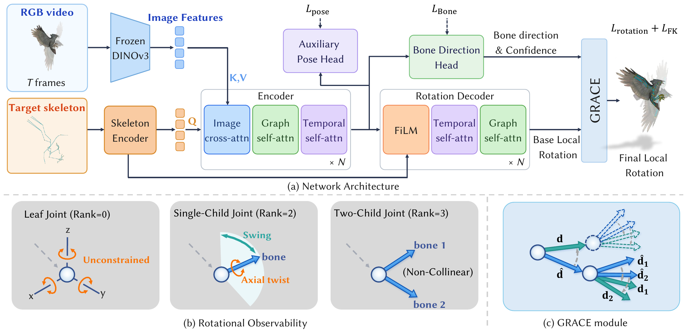
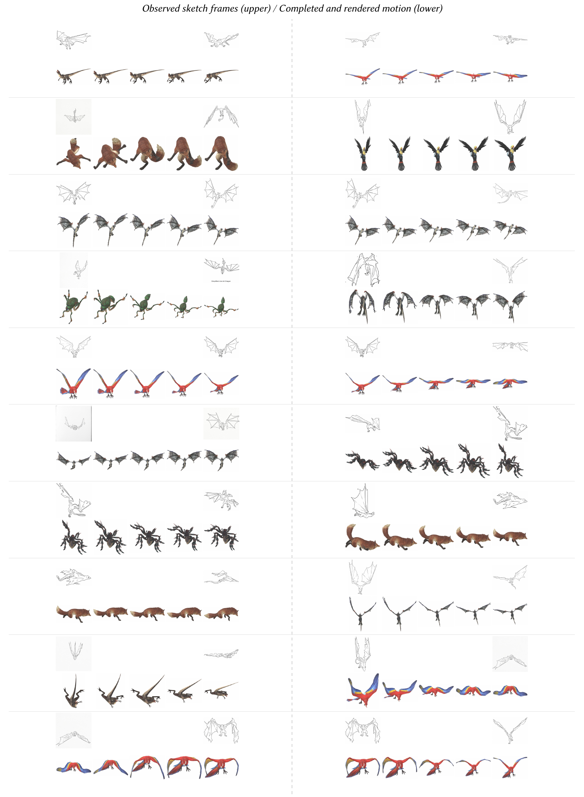

Condition on the target
Skeleton queries gather image evidence, exchange information across joints, and aggregate motion over time.
This paper studies recovering motion from a monocular video, even when the target skeleton topology differs from the subject observed in the video. Although previous work has made efforts to resolve this problem, they remain vulnerable to joint-rotation errors that are coupled across the skeleton and can propagate along its kinematic hierarchy. To mitigate these errors, we present CAST, a topology-aware motion capture framework that combines learned local rotations with geometric correction guided by predicted global bone directions.
Our observability analysis characterizes which rotational components can be constrained by outgoing bone directions. Guided by this analysis, GRACE uses reliability-gated alignment to correct composed orientations in parent-to-child order, leaving unconstrained components to the learned rotation predictor. The motion predictor and correction module are trained jointly with motion-derived supervision, using a frozen image encoder.
Experiments under the TopoCap evaluation protocol show that the proposed framework improves motion recovery across different target topologies, including unseen structures. Reference-based cross-skeleton evaluation on a curated Mixamo benchmark and a user preference study further assess transfer to different target structures. A causal CAST-B variant achieves over 51 FPS on a single NVIDIA A100 GPU, with timing covering image encoding and motion prediction.
Choose an input to see the same action expressed through different skeletons.
Visual evidence meets the structure of the target skeleton.

Skeleton queries gather image evidence, exchange information across joints, and aggregate motion over time.
The network estimates local rotations, global bone directions, and directional reliability from the learned features.
GRACE aligns bone directions and gates each update before passing the corrected orientation to child joints.
Matched-rig reconstruction and reference-based cross-skeleton transfer.
Compare the captured motion with the input across ten Zoo and ten MObj sequences.
Transfer motion across different source and target skeletons. Each row pairs the input clip with the motion CAST transfers to the target rig.
| Method | MPJPE (mm) | PA-MPJPE (mm) | MPJVE (mm/frame) | CD |
|---|---|---|---|---|
| Puppeteer | 454.70 | 236.38 | 19.74 | 0.245 |
| TopoCap | — | — | — | — |
| MCA V2* | 105.52 | 67.04 | 10.35 | 0.077 |
| CAST-B Ours | 42.68 | 33.23 | 5.48 | 0.036 |
| CAST-L Ours | 39.59 | 31.05 | 5.14 | 0.034 |
Results from the current manuscript. MCA V2* is our reimplementation trained on the same Zoo and MObj data. Metrics use root-centered predictions and the TopoCap normalization convention; CD is in normalized coordinates. A dash denotes an unreported result.
CAST-L reaches 74.63 mm MPJPE on MObj Unseen, compared with 103.04 mm for MCA V2*.
CAST-L reduces MPJPE by 54.7% relative to MCA V2* across 300 ordered source–target pairs on Mixamo.
CAST-L receives 63.3% of first-choice votes from 18 participants across 360 rankings.
Beyond dense video: streaming inference and key-frame completion.
Causal inference
A causal CAST-B variant processes incoming frames without waiting for future observations.
Single NVIDIA A100 · 30–89 joints
Measured with bf16 and torch.compile. Includes the frozen image backbone and motion prediction; excludes video acquisition and mesh rendering.
Key-frame completion
With one observed image every four frames, the completion variant increases MPJPE by 5.7–8.5% relative to dense input.

Sketch-guided examples at observation interval k = 4. Open the figure to view all 35 examples.
Bone directions cannot resolve every rotation: axial twist and leaf-joint orientation still depend on the learned predictor. CAST also assumes fixed parent-local bone offsets. Motion that changes these offsets lies outside its rotation-only representation.